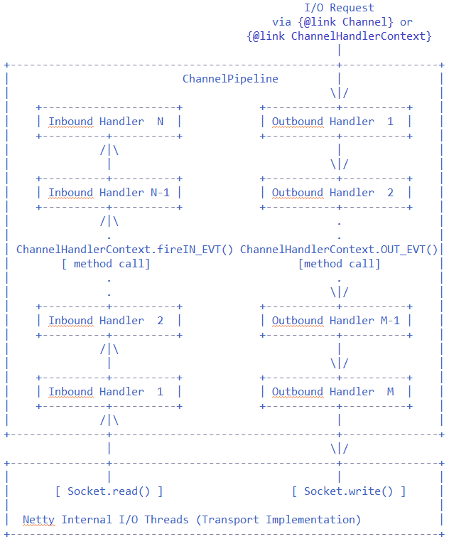
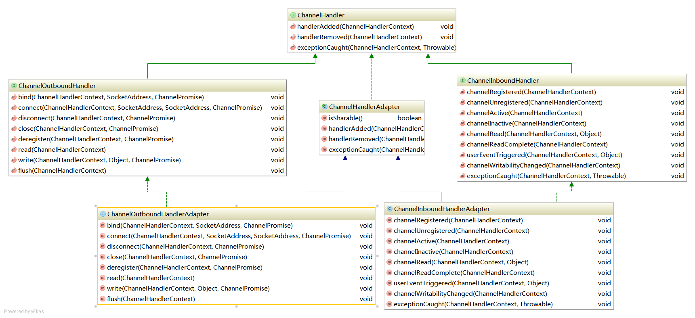
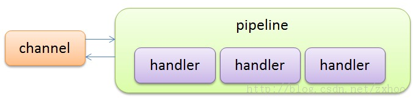
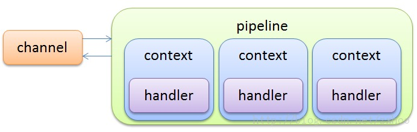
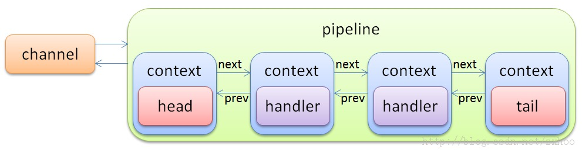
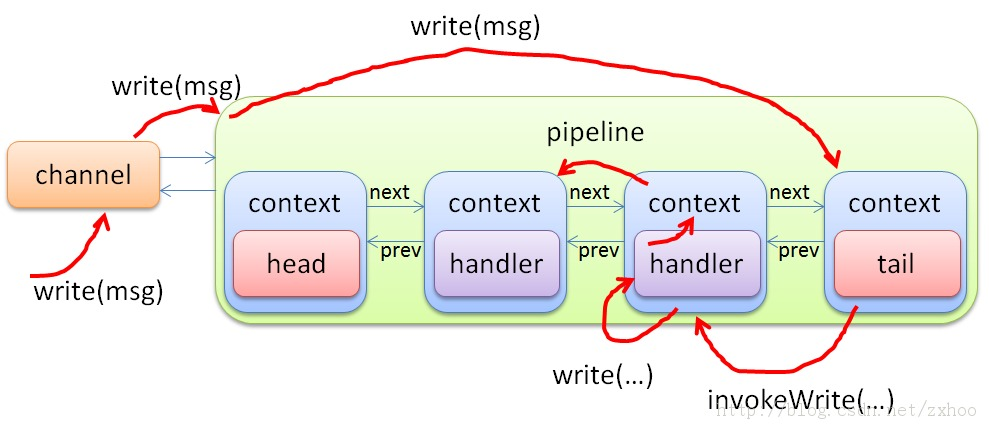

Netty
Channel
Channel Netty的核心接口，API是这么描述它的“A nexus to a network socket or a component which is capable of I/O operations such as read, write, connect, and bind.（关联了一个具有读、写、连接、绑定等I/O操作能力的网络套接字或者组件）”。
它提供给用户如下信息：
- 当前channel的状态（例如：是否open？是否connected？）
- 当前channel的配置参数（例如：receive buffer size）
- 当前channel支持的I/O操作（例如：read,write,connect,bind）
- 当前channel关联的处理I/O事件和请求的ChannelPipline
它的所有操作都是异步的，因为Netty的所有I/O操作都是一部的，这意味着操作都会立刻返回。可以通过返回的ChannelFuture来监听事件的完成状态。
ChannelHandler
ChannelHandler API这样描述“Handles or intercepts a ChannelInboundInvoker or ChannelOutboundInvoker operation, and forwards it to the next handler in a ChannelPipeline.（处理或拦截ChannelInboundInvoker或ChannelOutboundInvoker的操作，然后转发到ChannelPipeline的下一个handler。）”
ChannelHandler接口没有定义太多方法，。为了处理ChannelInboundInvoker或ChannelOutboundInvoker操作你需要实现它的子接口。它有许多子接口，最常用的是ChannelInboundHandlerAdapter和ChannelOutboundHandlerAdapter。

Pipeline中有两种ChannelHandler：
-
Inbound Handler：代表从Netty内部IO线程读到I/O数据，依次调用N个Handler到达最内部的处理逻辑。 -
Outbound Handler：代表从Channel发出I/O请求，依次调用N个Handler到达Netty的内部I/O线程。

@Sharable annotation
当一个ChannelHandler有@Shareable 注解修饰时，意味着你可以创建一个Handler实例然后将它赋给多个ChannelPipeline中而不存在静态条件。
ChannelPipeline
ChannelPipeline 它是存放处理或拦截输入和输出事件的ChannelHandler的list。
每个Channel都有自己的pipeline，而且当Channel创建时pipeline也自动创建。

ChannelHandlerContext
ChannelHandlerContext
每个ChannelHandler都拥有一个ChannelHandlerContext对象。ChannelHandler通过context对象与它所属的ChannelPipeline进行交互。

DefaultChannelPipeline
源码：
final class DefaultChannelPipeline implements ChannelPipeline {
// pipeline关联的channel
final AbstractChannel channel;
// head和tail是占位用，用户添加的ChannelHandlerContext都是加在它俩之间
final DefaultChannelHandlerContext head;
final DefaultChannelHandlerContext tail;
public DefaultChannelPipeline(AbstractChannel channel) {
if (channel == null) {
throw new NullPointerException("channel");
}
this.channel = channel;
TailHandler tailHandler = new TailHandler();
tail = new DefaultChannelHandlerContext(this, null, generateName(tailHandler), tailHandler);
HeadHandler headHandler = new HeadHandler(channel.unsafe());
head = new DefaultChannelHandlerContext(this, null, generateName(headHandler), headHandler);
head.next = tail;
tail.prev = head;
}
//可以看到pipeline内部其实是由ChannelHandlerContext为节点组成的双向链表
private void addLast0(final String name, DefaultChannelHandlerContext newCtx) {
checkMultiplicity(newCtx);
DefaultChannelHandlerContext prev = tail.prev;
newCtx.prev = prev;
newCtx.next = tail;
prev.next = newCtx;
tail.prev = newCtx;
name2ctx.put(name, newCtx);
callHandlerAdded(newCtx);
}
private void addFirst0(String name, DefaultChannelHandlerContext newCtx) {
checkMultiplicity(newCtx);
DefaultChannelHandlerContext nextCtx = head.next;
newCtx.prev = head;
newCtx.next = nextCtx;
head.next = newCtx;
nextCtx.prev = newCtx;
name2ctx.put(name, newCtx);
callHandlerAdded(newCtx);
}
//addAfter 和addBefore方法实现方式类似也是链表操作
}

DefaultChannelHandlerContext
源码：
final class DefaultChannelHandlerContext extends DefaultAttributeMap implements ChannelHandlerContext {
volatile DefaultChannelHandlerContext next;
volatile DefaultChannelHandlerContext prev;
private final boolean inbound;
private final boolean outbound;
private final AbstractChannel channel;
private final DefaultChannelPipeline pipeline;
private final String name;
private final ChannelHandler handler;
private boolean removed;
DefaultChannelHandlerContext(DefaultChannelPipeline pipeline, EventExecutorGroup group, String name,
ChannelHandler handler) {
if (name == null) {
throw new NullPointerException("name");
}
if (handler == null) {
throw new NullPointerException("handler");
}
channel = pipeline.channel;
this.pipeline = pipeline;
this.name = name;
//可以看到ChannelHandler和ChannelHandlerContext是在构造的时候绑定在一起的
this.handler = handler;
if (group != null) {
// Pin one of the child executors once and remember it so that the same child executor
// is used to fire events for the same channel.
EventExecutor childExecutor = pipeline.childExecutors.get(group);
if (childExecutor == null) {
childExecutor = group.next();
pipeline.childExecutors.put(group, childExecutor);
}
executor = childExecutor;
} else {
executor = null;
}
//ChannelHandler是输入还是输出也是在构造时判定的
inbound = handler instanceof ChannelInboundHandler;
outbound = handler instanceof ChannelOutboundHandler;
}
}
事件的传播(event flow)
我们以写操作为例来看看Netty中的事件是如何在Channel、ChannelHandler、ChannelPipeline、ChannelContext之间流转的。
源码：
public abstract class AbstractChannel extends DefaultAttributeMap implements Channel {
private final DefaultChannelPipeline pipeline;
protected AbstractChannel(Channel parent) {
this.parent = parent;
unsafe = newUnsafe();
pipeline = new DefaultChannelPipeline(this);
}
//直接调用pipeline的write操作
@Override
public ChannelFuture write(Object msg) {
return pipeline.write(msg);
}
}
final class DefaultChannelPipeline implements ChannelPipeline {
final DefaultChannelHandlerContext tail;
public DefaultChannelPipeline(AbstractChannel channel) {
if (channel == null) {
throw new NullPointerException("channel");
}
this.channel = channel;
TailHandler tailHandler = new TailHandler();
tail = new DefaultChannelHandlerContext(this, null, generateName(tailHandler), tailHandler);
HeadHandler headHandler = new HeadHandler(channel.unsafe());
head = new DefaultChannelHandlerContext(this, null, generateName(headHandler), headHandler);
head.next = tail;
tail.prev = head;
}
//直接从pipeline的ChannelHandler链表尾部开始调用
@Override
public ChannelFuture write(Object msg) {
return tail.write(msg);
}
}
final class DefaultChannelHandlerContext extends DefaultAttributeMap implements ChannelHandlerContext {
private final boolean outbound;
private final AbstractChannel channel;
private final DefaultChannelPipeline pipeline;
//可以看到Outbound的确如API那个pipeline事件流的图展示的那样，从1到N的顺序执行的
private DefaultChannelHandlerContext findContextOutbound() {
DefaultChannelHandlerContext ctx = this;
do {
ctx = ctx.prev;
} while (!ctx.outbound);
return ctx;
}
private void write(Object msg, boolean flush, ChannelPromise promise) {
//找到开始的OutboundHandler然后开始执行
DefaultChannelHandlerContext next = findContextOutbound();
EventExecutor executor = next.executor();
if (executor.inEventLoop()) {
next.invokeWrite(msg, promise);
if (flush) {
next.invokeFlush();
}
} else {
int size = channel.estimatorHandle().size(msg);
if (size > 0) {
ChannelOutboundBuffer buffer = channel.unsafe().outboundBuffer();
// Check for null as it may be set to null if the channel is closed already
if (buffer != null) {
buffer.incrementPendingOutboundBytes(size);
}
}
Runnable task;
if (flush) {
task = WriteAndFlushTask.newInstance(next, msg, size, promise);
} else {
task = WriteTask.newInstance(next, msg, size, promise);
}
safeExecute(executor, task, promise, msg);
}
}
private void invokeWrite(Object msg, ChannelPromise promise) {
try {
((ChannelOutboundHandler) handler).write(this, msg, promise);
} catch (Throwable t) {
notifyOutboundHandlerException(t, promise);
}
}
}
public class ChannelOutboundHandlerAdapter extends ChannelHandlerAdapter implements ChannelOutboundHandler {
// 可以看到OutBound的默认实现就是直接调用了Context的write方法，开始执行下一个handler
@Override
public void write(ChannelHandlerContext ctx, Object msg, ChannelPromise promise) throws Exception {
ctx.write(msg, promise);
}
}

上面这个过程总结下来就是：Channel.write() -> ChannelPipeline.write() -> ChannelHandlerContext.write() -> ChannelHandlerInvoker.write() -> ChannelHandler.write()
日期：2014-07-15
参考资料：Netty4学习笔记（1）-- ChannelPipeline、Netty 4.0 API、Netty 4.x学习笔记 – Channel和Pipeline